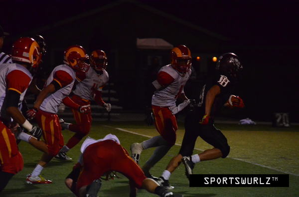
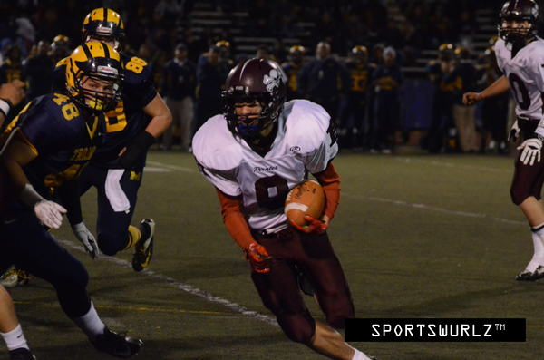
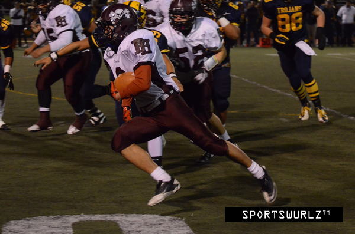
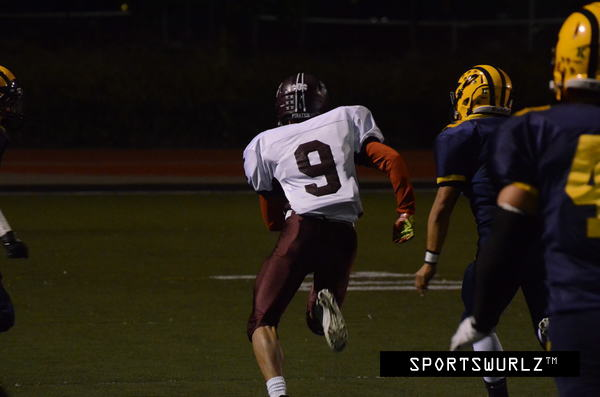
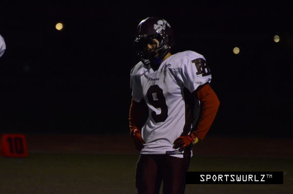
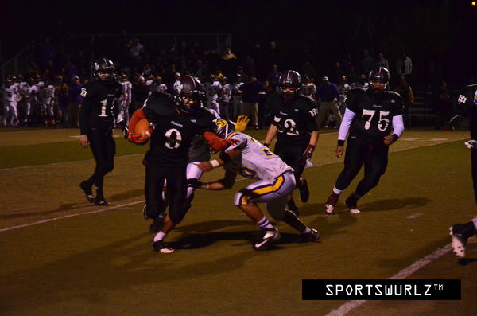
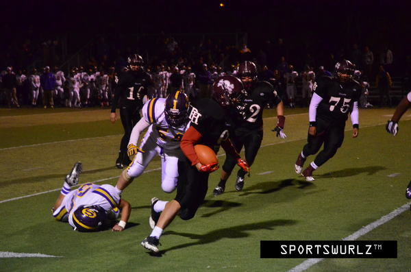

This video was what inspired me to write about football today... kind of an odd connection right?
A lot of my life experiences occur in small segments that circle right back around and tell the same story, just in different context.
This picture was taken before my Junior year of high school.
4 years ago I was about 35 pounds lighter, 4 inches shorter, and unaware of almost everything but two things, becoming a starter, and getting into college. It's not too different now that I've been attending college and trying to earn an internship; in fact my journey to start my post-graduate life is a lot like my journey to becoming a starting runningback.
A happy tale you say? I wish it was... it's a realization of a process that I'd like to share.
Open Ears, Closed Mind
"Kenny, you're good at math right?
There are 2 slot receivers and 2 receivers, but just 1 runningback.
Why do you want to be a runningback? The chances of you being able to start are that much lower because you have to compete against players like Tovio and Joel."
Yeah... you're right Coach Steve. What was I thinking? I guess I'll try to be a slot receiver since I have more chances to start at that position. Thanks for knocking some sense into me.
Throughout my entire life, I've always wanted to be a runningback. Growing up when people asked me what I wanted to be when I grow up, I said I wanted to be an NFL runningback.
Well.. being around smart, logical siblings and parents: influential figures never put me in a position to actually want to become an NFL runningback.
My answers started to be more skewed towards, "Software Engineer, Product Manager, Accountant, Financial Analyst" because those were just logical occupations that I could pursue, being the skinny, short, Asian kid I was. It was as if I didn't really have a say, it was all that I was taught, that school and academics were the way to a happy, stable life.
The narrative has changed a bit since I was a child. Now I want to be a Program Manager, or a Technical Program Manager at a company like Facebook, Google, Salesforce, a company with a great inclusive culture and where I can make a difference.
What saddens me the most is that, no matter what I truly wanted to be or hoped to strive for, I always let those who I think are more wise than I am alter my goals, determine what I can become, and prevent me from sticking my hand for the piece of candy I want.
The more I go about my life, the more I wished I had let people tell me what to do. Then never follow.
Tanking Chances and Drawing Parallels
Yes, I meant tanking chances and you'll learn why,
For those who didn't play High School football, there are two teams during practices, the Scout team and the Starting team. The scout team is comprised of all the non-starters and at the time, players like me.
Football was a lot like how life is now: I wasn't the tallest, strongest, or fastest much like I'm not the smartest, the best at coding, or the most talented.
Mondays and Tuesdays were my favorite practice days because that was when I could play scout runningback, the only time I could ever play runningback. Every single Monday and Tuesday, I would put in my 200% to run the starting defense out of their own shoes and prove myself I was worthy; consistently rushing for more than 5 yards on each carry before the whistle was blown because the defense had already been exploited. Our defense ended up being one of the best in the league so outplaying the starting defense with plays they expected, proved myself that I knew I was good enough.
On Wednesdays, Coach Tim (offensive coach) would come and we would split up into our respective offensive roles. This is where I could go to the runningbacks, or slot receivers/receivers. On the first offensive practice of my Junior and Senior year, both fucking times... I listened to Coach Steve and went to the receivers' section on the eastern part of the field.
I'm a god damn fucking idiot.
"Hey Tim, give Kenny a shot at slot, he keeps killing our defense in practice."
- Coach Kiesle (Head Coach)
Well with every chance I was given was at Slot Receiver... I performed below average every single time.
- Not being a good Slot Receiver was one issue.
- Not being able to perform when given an opportunity was the second issue.
- Not challenging the fact that I could compete against Tovio and Joel (experienced and trusted players) added a third issue.
- Knowing I was a better runningback than a slot was the biggest problem of them all; I had the obvious answer of where I should be, but never allowed myself to act upon that thought.
Coach Tim never being there on Mondays and Tuesdays was extremely detrimental because he didn't know, and had never witnessed what I can do when I run the ball. Rightfully so, whenever I didn't perform when given a shot at Slot Receiver, he simply lost faith and proceeded to think I'm not fit for the role.
The dilemma I went through with football, I am also going through with my internship search.
For those of you that don't already know me, I have a really successful older pair of siblings and one of them is a Computer Science major, just like me. I go to him for advice all the time and he's told me something very similar to what Coach Steve has told me.
"You should aim for Software Engineering roles because there is only one PM for every team of Software Engineers.Being a Slot Receiver is a lot like me being a Software Engineer, I can fulfill the role because I know the basic fundamentals: I can run my routes, catch the ball, and progress up field but when stacked up against my competition, I am average at best.
Plus, if you want to be a PM one day, it's easier to become one if you start off as a Software Engineer because that way you have technical skills and empathy for the people who work for you."
I've had interviews for great companies like Box, Pure Storage, LinkedIn, Zillow, and Microsoft in the past two months. They all told me the same thing Coach Steve and my brother Kelvin told me:
You're better off interviewing for Software Engineering positions because Product Management interns tend to be MBA students and not to discourage you but, it is extremely competitive because of the limited amount of positions available.I've definitely heard this before... Tovio and Joel being other MBA students, the limited runningback position being a Product Management internship, failed trial runs at Slot Receiver similar to my failed Software Engineering interviews, and most of all, having Coach Tim say I'm not fit for the Slot Position and that I probably can't play runningback either.
Right Place, Wrong Time
Fast forward to senior year and about halfway through the season. With a horrible mishap that injured Tovio, our starting runningback, we had no backup because Joel was also playing hurt as a safety on defense. It took an injured player for me to decide to step up and tell the coaches I wanted to change from being a slot to being a runningback.
I'm kind of disappointed that it took an unfortunate event for me to step-up for what I knew I wanted, but I guess what was most important is that I finally spoke up and was given a chance to try-out for the runningback position.. not slot.

My first start. People are behind me for a reason.
With two games left in the season, I did not have enough time to find my groove before playoffs. Before I knew it, we were playing in the CCS D1 semi-finals versus the Milpitas Trojans. I went into the game intimidated by the fact that I would be playing against top-tier D1 recruits. I distinctly remember my first run because I got smacked by a 280 pound lineman and the only thought I had was, "this is going to be a long game."

No hole, break to the outside

I bought those cleats second hand from Joel for $20; those spikes were so worn out ¯\_(ツ)_/¯

The D1 Recruited Athletes I played against can chase me all they want.
That game ended up being my best game at 6.29 yards per carry. To this day I'm very proud of where I've come from and worked to accomplish. Over the course of all games I played, I ended up averaging 5.00 yards per carry. Which is almost as good as Tovio's 5.68 yards, which means this entire time I thought he was so much better than me, when I was actually almost as good as him. This was when I realized hey, I was right after all, runningback is definitely for me and I was wrong to even listen to Coach Steve that I should cater my options to percentages.

Sometimes it's tough to know that even if you got what you wanted, you wish it could have came earlier.
Now that I'm almost an entire 4 years removed from having been in football pads, I'm glad to say that my most rewarding high school experience to this day was playing Varsity Football. The people that surrounded me, the diversity in personalities, and the joy we all had playing a sport we loved is still incomparable to anything I have ever experienced to this day.
How does this relate to my journey through the tech industry? Well, that's the thing. I hope it doesn't relate at all. I don't want to go about my career like I did my football career, constantly waiting for someone to tell me that it's okay to get what I really want.
I wish I were a runningback earlier than later, and I wish that I become a Product/Program Manager sooner than later. No matter what starters or MBA candidates, no matter the numbers or competitiveness, no matter whether or not people think I need to wait my turn, I'm going to reach for what I believe I am the best at and what I want to become.
But in the end, I guess what I also realized is that I finally know what I really want in life. But I don't think I can ever attempt to earn it until coaches and seniority think I'm ready, even if I know I'm ready now.
Elude Doubt, Run Past Obstacles

